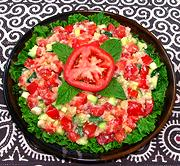

|
Athieke / Gari SaladSenegal, Ivory Coast - Athieke Salad | ||||
| Makes: Effort: Sched: DoAhead: |
2-1/4 # *** 1-3/4 hrs Yes |
This is an excellent colorful vegetable salad made a little more substantial by including Athieke / Gari. Some versions add canned tuna or other animal items, but this clean tasting version is vegetarian. | |||
|
1/2 ar ----- 1 10 7 7 ----- 2 4 5 1 1/2 ----- ar |
c c --- # oz oz --- T T t t --- |
Gari (1) Water, cool -- Salad Tomatoes Cucumbers (2) Bell Pepper, red Scallions -- Dressing Habanero (3) Lime Juice Olive Oil ExtV Salt Pepper -- Serve With Lettuce Leaves |
MAKE - (40 min + sitting time)
|